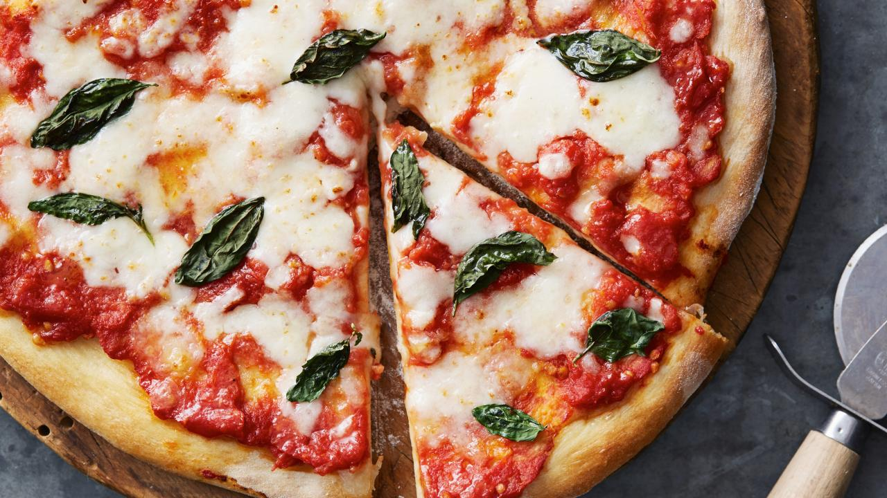

Pizza Margherita

Ingredients
- 1 (28-ounce) can pelati tomatoes
- Kosher salt
- All-purpose flour, for dusting
-
4 (12-ounce) pizza dough balls, at room temperature, recipe follows
- 8 ounce mozzarella, grated
- Handful fresh basil leaves, torn
Pizza Dough
- 1 (.25-ounce) package dry active yeast (2 1/4 teaspoons)
- 1/2 cup lukewarm water
- 4 cups bread flour
- 1 1/2 teaspoon salt
- 3/4 cup cold water
- 1/4 cup olive oil, plus more for bowl
Preparation Time: 25mins
Instructions
-
Preheat a wood-fired pizza oven to very hot 4 hours before cooking.
Alternately, you can use a preheated pizza stone in your home oven. It's
best to heat it for 1 hour at 500 degrees F before baking.
-
Add tomatoes to a food processor and process until smooth. Season with
salt.
-
Sprinkle some flour on your pizza peel. Using a rolling pin, stretch
your dough to a very thin 10-inch round.
-
Using a spoon to spread, put 1/4 of the sauce on the dough, and spread
leaving a 1-inch border. Sprinkle 1/4 of the mozzarella over the sauce.
-
Gently put the pizza on the floor of the pizza oven. Bake until golden
and crisp, about 3 minutes. Top with hand torn basil.
Pizza Dough
-
In the bowl of a stand mixer, add the yeast, lukewarm water, and 1/2 cup
bread flour. Mix well and let sit until bubbly, about 30 minutes.
-
Whisk together the remaining 3 1/2 cups bread flour and salt in another
bowl so it will be evenly distributed.
-
Once the yeast mixture is nice and bubbly and looks like foamy beer, add
3/4 cup cold water and olive oil. Using a dough hook, turn the mixer on
and add the flour in increments.
-
Mix the dough for about 5 minutes, until the dough starts creeping up
the dough hook and comes away from the sides of the bowl.
-
Place the dough in a large bowl lightly greased with olive oil. Turn to
coat all sides of the dough with oil. Cover the bowl loosely with a
clean tea towel. Let rise until doubled in size, about 2 hours. Punch
dough down, and let rise another hour.
-
Divide the dough into 4 equal disks. Lightly flour a work surface. Using
your fingers or heels of your hands (and a rolling pin, if you prefer)
stretch the disks out to a 10-inch round.
- Repeat with the remaining 3 pizza dough disks.
Back to Italian Recipes